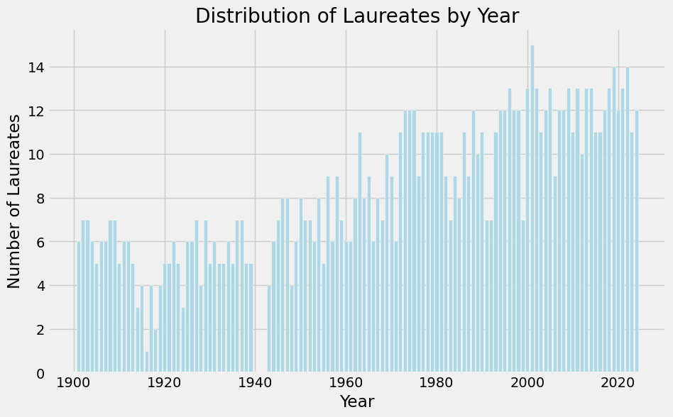
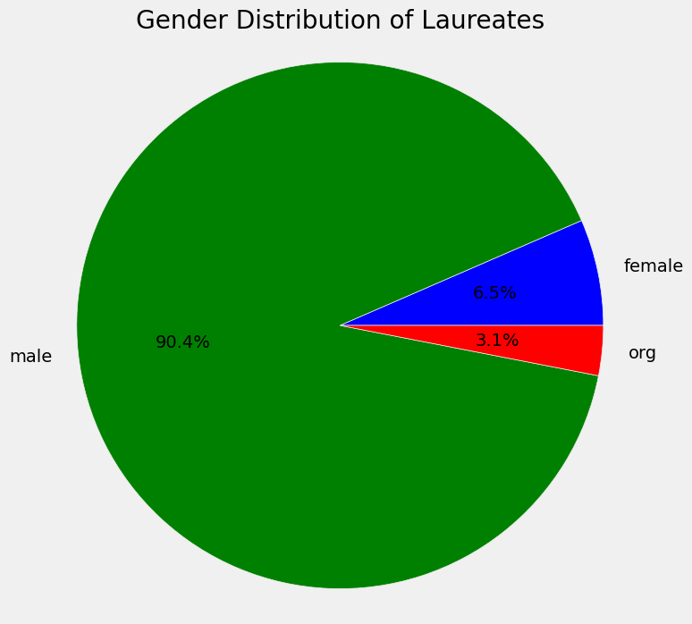
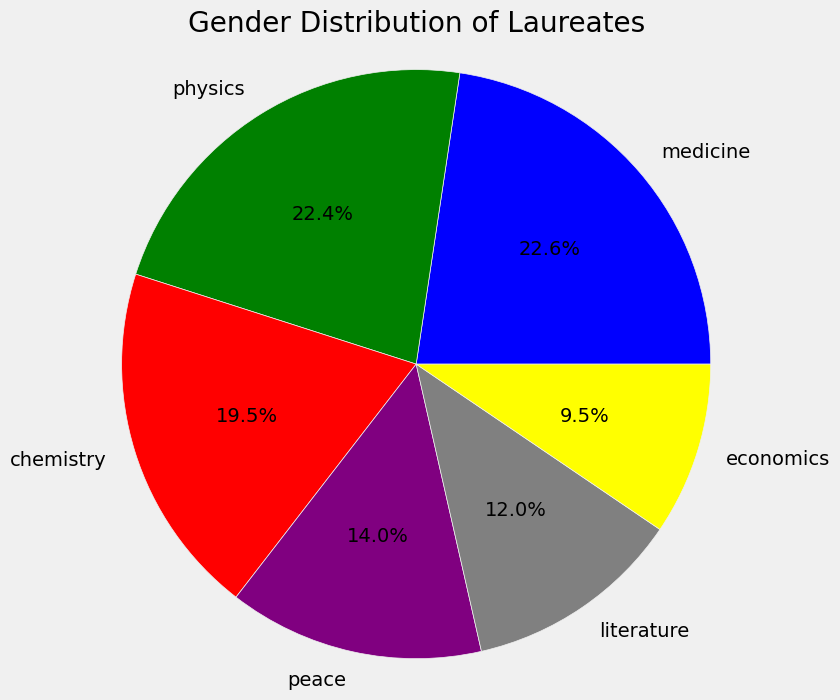
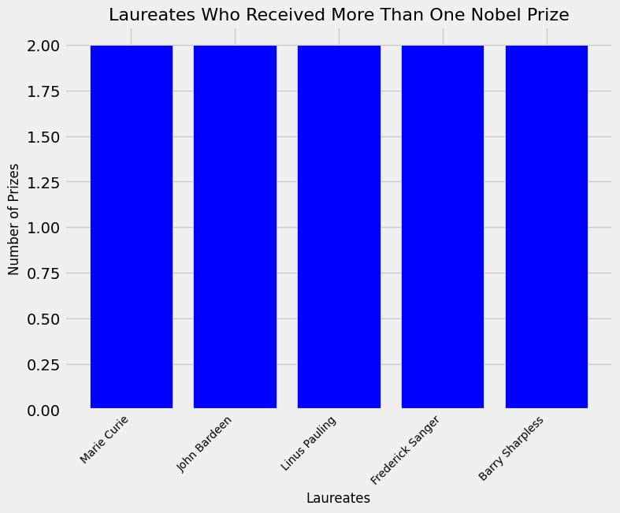
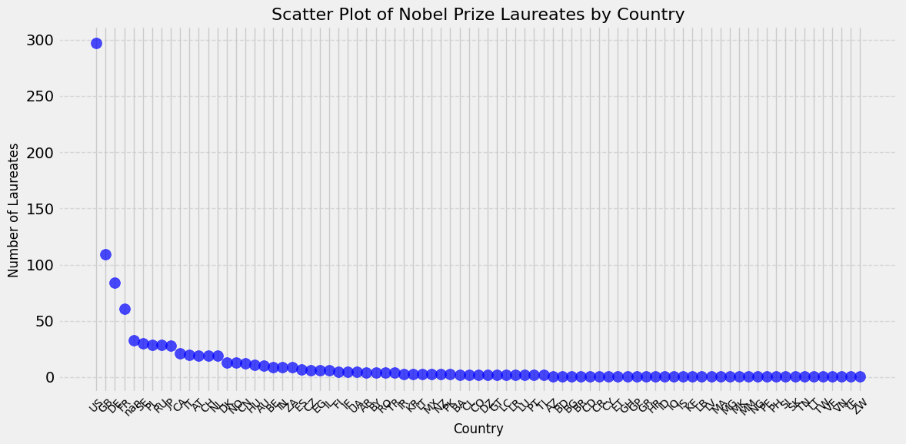
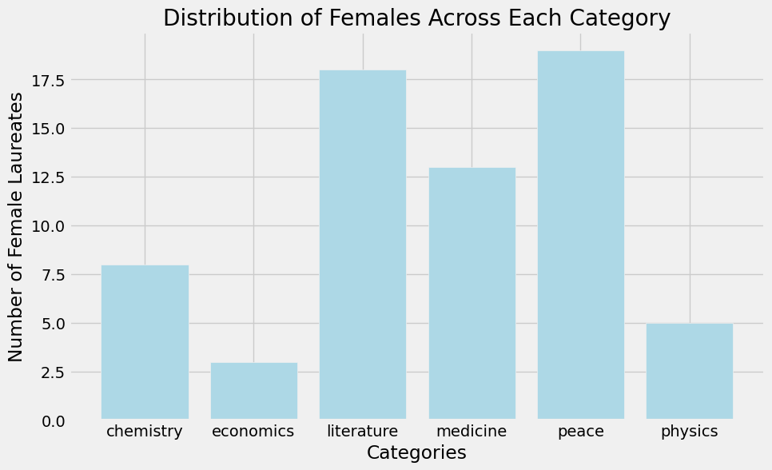

We will investigate a dataset that records the more than 100-year history of Nobel laureates. Numerous details are available in this collection, such as the names, nationalities, birth and death dates, award categories, affiliations, and even the reasons for the laureates' recognition to figure out certrain trend or pattern. These trends identified could show any disparities within the education system which will help any policy maker in the education field to help change the system in the future for the better of the country/world.
from datascience import *
import numpy as np
import pandas as pd
import matplotlib
matplotlib.use('Agg')
%matplotlib inline
import matplotlib.pyplot as plots
plots.style.use('fivethirtyeight')noble_prize_table = pd.read_csv('noble_prize_winners.csv')
noble_prize_table.head(20)| id | firstname | surname | born | died | bornCountry | bornCountryCode | bornCity | diedCountry | diedCountryCode | diedCity | gender | year | category | overallMotivation | share | motivation | name | city | country | |
|---|---|---|---|---|---|---|---|---|---|---|---|---|---|---|---|---|---|---|---|---|
| 0 | 1 | Wilhelm Conrad | Röntgen | 1845-03-27 | 1923-02-10 | Prussia (now Germany) | DE | Lennep (now Remscheid) | Germany | DE | Munich | male | 1901 | physics | NaN | 1 | "in recognition of the extraordinary services ... | Munich University | Munich | Germany |
| 1 | 2 | Hendrik A. | Lorentz | 1853-07-18 | 1928-02-04 | the Netherlands | NL | Arnhem | the Netherlands | NL | NaN | male | 1902 | physics | NaN | 2 | "in recognition of the extraordinary service t... | Leiden University | Leiden | the Netherlands |
| 2 | 3 | Pieter | Zeeman | 1865-05-25 | 1943-10-09 | the Netherlands | NL | Zonnemaire | the Netherlands | NL | Amsterdam | male | 1902 | physics | NaN | 2 | "in recognition of the extraordinary service t... | Amsterdam University | Amsterdam | the Netherlands |
| 3 | 4 | Henri | Becquerel | 1852-12-15 | 1908-08-25 | France | FR | Paris | France | FR | NaN | male | 1903 | physics | NaN | 2 | "in recognition of the extraordinary services ... | École Polytechnique | Paris | France |
| 4 | 5 | Pierre | Curie | 1859-05-15 | 1906-04-19 | France | FR | Paris | France | FR | Paris | male | 1903 | physics | NaN | 4 | "in recognition of the extraordinary services ... | École municipale de physique et de chimie indu... | Paris | France |
| 5 | 6 | Marie | Curie | 1867-11-07 | 1934-07-04 | Russian Empire (now Poland) | PL | Warsaw | France | FR | Sallanches | female | 1903 | physics | NaN | 4 | "in recognition of the extraordinary services ... | NaN | NaN | NaN |
| 6 | 6 | Marie | Curie | 1867-11-07 | 1934-07-04 | Russian Empire (now Poland) | PL | Warsaw | France | FR | Sallanches | female | 1911 | chemistry | NaN | 1 | "in recognition of her services to the advance... | Sorbonne University | Paris | France |
| 7 | 8 | Lord | Rayleigh | 1842-11-12 | 1919-06-30 | United Kingdom | GB | Langford Grove Maldon Essex | United Kingdom | GB | NaN | male | 1904 | physics | NaN | 1 | "for his investigations of the densities of th... | Royal Institution of Great Britain | London | United Kingdom |
| 8 | 9 | Philipp | Lenard | 1862-06-07 | 1947-05-20 | Hungary (now Slovakia) | SK | Pressburg (now Bratislava) | Germany | DE | Messelhausen | male | 1905 | physics | NaN | 1 | "for his work on cathode rays" | Kiel University | Kiel | Germany |
| 9 | 10 | J.J. | Thomson | 1856-12-18 | 1940-08-30 | United Kingdom | GB | Cheetham Hill | United Kingdom | GB | Cambridge | male | 1906 | physics | NaN | 1 | "in recognition of the great merits of his the... | University of Cambridge | Cambridge | United Kingdom |
| 10 | 11 | Albert A. | Michelson | 1852-12-19 | 1931-05-09 | Prussia (now Poland) | PL | Strelno (now Strzelno) | USA | US | Pasadena CA | male | 1907 | physics | NaN | 1 | "for his optical precision instruments and the... | University of Chicago | Chicago IL | USA |
| 11 | 12 | Gabriel | Lippmann | 1845-08-16 | 1921-07-13 | Luxembourg | LU | Hollerich | NaN | NaN | NaN | male | 1908 | physics | NaN | 1 | "for his method of reproducing colours photogr... | Sorbonne University | Paris | France |
| 12 | 13 | Guglielmo | Marconi | 1874-04-25 | 1937-07-20 | Italy | IT | Bologna | Italy | IT | Rome | male | 1909 | physics | NaN | 2 | "in recognition of their contributions to the ... | Marconi Wireless Telegraph Co. Ltd. | London | United Kingdom |
| 13 | 14 | Ferdinand | Braun | 1850-06-06 | 1918-04-20 | Hesse-Kassel (now Germany) | DE | Fulda | USA | US | Brooklyn NY | male | 1909 | physics | NaN | 2 | "in recognition of their contributions to the ... | Strasbourg University | Strasbourg | Germany (now France) |
| 14 | 15 | Johannes Diderik | van der Waals | 1837-11-23 | 1923-03-08 | the Netherlands | NL | Leiden | the Netherlands | NL | Amsterdam | male | 1910 | physics | NaN | 1 | "for his work on the equation of state for gas... | Amsterdam University | Amsterdam | the Netherlands |
| 15 | 16 | Wilhelm | Wien | 1864-01-13 | 1928-08-30 | Prussia (now Russia) | RU | Gaffken (now Parusnoye) | Germany | DE | Munich | male | 1911 | physics | NaN | 1 | "for his discoveries regarding the laws govern... | Würzburg University | Würzburg | Germany |
| 16 | 17 | Gustaf | Dalén | 1869-11-30 | 1937-12-09 | Sweden | SE | Stenstorp | Sweden | SE | Stockholm | male | 1912 | physics | NaN | 1 | "for his invention of automatic regulators for... | Swedish Gas-Accumulator Co. | Lidingö Stockholm | Sweden |
| 17 | 18 | Heike | Kamerlingh Onnes | 1853-09-21 | 1926-02-21 | the Netherlands | NL | Groningen | the Netherlands | NL | Leiden | male | 1913 | physics | NaN | 1 | "for his investigations on the properties of m... | Leiden University | Leiden | the Netherlands |
| 18 | 19 | Max | von Laue | 1879-10-09 | 1960-04-23 | Germany | DE | Pfaffendorf | West Germany (now Germany) | DE | Berlin | male | 1914 | physics | NaN | 1 | "for his discovery of the diffraction of X-ray... | Frankfurt-on-the-Main University | Frankfurt-on-the-Main | Germany |
| 19 | 20 | William | Bragg | 1862-07-02 | 1942-03-12 | United Kingdom | GB | Wigton | United Kingdom | GB | London | male | 1915 | physics | NaN | 2 | "for their services in the analysis of crystal... | University College | London | United Kingdom |
Lets answer the question "How long has the dataset been maintained?"
# Finding the first and recent years for noble prize winners
min_year = np.nanmin(noble_prize_table['year'])
max_year = np.nanmax(noble_prize_table['year'])
many_years_between = max_year - min_year
# plotting a graph to visualize the years of Laucreates
years = noble_prize_table['year']
all_years, total_counts = np.unique(years, return_counts=True)
plots.figure(figsize=(10, 6))
plots.bar(all_years, total_counts, color='lightblue')
plots.title('Distribution of Laureates by Year')
plots.xlabel('Year')
plots.ylabel('Number of Laureates')
plots.show()
print(f"The dataset spans {many_years_between} years, from {min_year} to {max_year}.")
The dataset spans 123 years, from 1901 to 2024.
Answer: The dataset has been maintained for at least 123 years, and it ranges from 1901 to 2024! 123 years is equivalent to 12.3 decades!
Lets answer the question "What is the distribution of laureates by gender?"
# Finding the data on Laucreates' genders
counting_genders = np.unique(noble_prize_table['gender'], return_counts=True)
gender_distribution = dict(zip(counting_genders[0], counting_genders[1]))
# Extracting the Gender data into a pie graph
labels = gender_distribution.keys()
sizes = gender_distribution.values()
colors = ['blue', 'green', 'red']
plots.figure(figsize=(8, 8))
plots.pie(sizes, labels=labels, colors=colors, autopct='%1.1f%%')
plots.title('Gender Distribution of Laureates')
plots.axis('equal')
plots.show()
print("Gender distribution:", gender_distribution)
Gender distribution: {'female': 66, 'male': 915, 'org': 31}
Answer: The gender distribution shows that the males are dominating the gender demographic of noble prize winners by 90.4% by having 915 males. On the other hand, there are 66 females being 6.5% of the whole demographic of laureates.
Lets answer the question "What are the most common categories awarded over time?"
# Gathering all unique categories and only list the top 6 most common category with their respective total in a dictionairy format
categories, total_in_category = np.unique(noble_prize_table['category'], return_counts=True)
most_common_categories = dict(sorted(zip(categories, total_in_category), key=lambda x: -x[1]))
# Extracting the most common categories into a pie chart
labels = most_common_categories.keys()
sizes = most_common_categories.values()
colors = ['blue', 'green', 'red','purple', 'grey', 'yellow']
plots.figure(figsize=(8, 8))
plots.pie(sizes, labels=labels, colors=colors, autopct='%1.1f%%')
plots.title('Gender Distribution of Laureates')
plots.axis('equal')
plots.show()
print("Most common categories:", most_common_categories)
Most common categories: {'medicine': 229, 'physics': 227, 'chemistry': 197, 'peace': 142, 'literature': 121, 'economics': 96}
Answer: The most common categories awarded over time were medicine: 229 (22.6%), physics: 227 (22.4%), chemistry: 197 (19.5%), peace: 142 (14.0%), literature: 121 (12.0%), and economics: 96 (9.5%). This shows that medicine is very important in today's world for the people's well-being.
Lets answer the question "Were there laureates who were awarded more than one award?"
# Extracting data to get the id, first, and last names of the multi-winners
laureates = noble_prize_table.groupby(["id", "firstname", "surname"])
sizes = laureates.size()
multi_winners = sizes[sizes > 1]
# Creating a bar graph for the multiple award winning laureates
first_last_names = [" ".join(name[1:]) for name in multi_winners.index]
amount_of_awards = multi_winners.values
plots.figure(figsize=(8, 6))
plots.bar(first_last_names, amount_of_awards, color='blue')
plots.title("Laureates Who Received More Than One Nobel Prize", fontsize=16)
plots.xlabel("Laureates", fontsize=12)
plots.ylabel("Number of Prizes", fontsize=12)
plots.xticks(rotation=45, ha='right', fontsize=10)
plots.show()
Answer: The laureates who earned more than one noble prize are Marie Curie, John Bardeen, Linus Pauling, Frederick Sanger, and Barry Sharpless. All of these winners all had at least 2 noble prizes. This is important because they are pioneers of our future generation that help facillitate the way for the world's evolution.
Lets answer the question "What countries did these noble prize winners come from?"
# Finding the data on Laucreates' countries through the bornCountryCode
noble_prize_table['bornCountry'] = noble_prize_table['bornCountryCode'].astype(str)
unique_countries, total_ = np.unique(noble_prize_table['bornCountry'], return_counts=True)
countries_total = dict(sorted(zip(unique_countries, total_), key=lambda x: -x[1]))
x_values = countries_total.keys()
y_values = countries_total.values()
# Plotting the data of the countries of the laucreates into a scatter plot
plots.figure(figsize=(12, 6))
plots.scatter(x_values, y_values, color='b', s=100, alpha=0.7)
plots.title('Scatter Plot of Nobel Prize Laureates by Country', fontsize=16)
plots.xlabel('Country', fontsize=12)
plots.ylabel('Number of Laureates', fontsize=12)
plots.xticks(rotation=45, fontsize=10)
plots.grid(axis='y', linestyle='--', alpha=0.7)
plots.tight_layout()
plots.show()
print("Country distribution:", countries_total)
Country distribution: {'US': 297, 'GB': 109, 'DE': 84, 'FR': 61, 'nan': 33, 'SE': 30, 'PL': 29, 'RU': 29, 'JP': 28, 'CA': 21, 'IT': 20, 'AT': 19, 'CH': 19, 'NL': 19, 'DK': 13, 'NO': 13, 'CN': 12, 'HU': 11, 'AU': 10, 'BE': 9, 'IN': 9, 'ZA': 9, 'ES': 7, 'CZ': 6, 'EG': 6, 'IL': 6, 'FI': 5, 'IE': 5, 'UA': 5, 'AR': 4, 'BY': 4, 'RO': 4, 'TR': 4, 'IR': 3, 'KR': 3, 'LT': 3, 'MX': 3, 'NZ': 3, 'PK': 3, 'BA': 2, 'CL': 2, 'CO': 2, 'DZ': 2, 'GT': 2, 'LC': 2, 'LR': 2, 'LU': 2, 'PT': 2, 'TL': 2, 'AZ': 1, 'BD': 1, 'BG': 1, 'BR': 1, 'CD': 1, 'CR': 1, 'CY': 1, 'ET': 1, 'GH': 1, 'GP': 1, 'GR': 1, 'HR': 1, 'ID': 1, 'IQ': 1, 'IS': 1, 'KE': 1, 'LB': 1, 'LV': 1, 'MA': 1, 'MG': 1, 'MK': 1, 'MM': 1, 'NG': 1, 'PE': 1, 'PH': 1, 'SI': 1, 'SK': 1, 'TN': 1, 'TT': 1, 'TW': 1, 'VE': 1, 'VN': 1, 'YE': 1, 'ZW': 1}
Answer: The top 3 most awarded laureates by countries were United States (297), Great Britian (109), and Deutschland or Germany (84). This shows that these top 3 countries are above other countries in terms of education quality producing a lot of these talented people. For example, The United States leads in laureates because of their economic resources and research institutions.
Lets answer the question "Which categories have the highest representation of female winners, and which have the least?"
# Extracting the data of female laureates and finding the total female winners of each category
female_winners = noble_prize_table[noble_prize_table['gender'] == 'female']
female_categories, female_category_counts = np.unique(female_winners['category'], return_counts=True)
female_representation = sorted(zip(female_categories, female_category_counts), key=lambda x: -x[1])
# Graphing the data of female representation into a bar graph
plots.figure(figsize=(10, 6))
plots.bar(female_categories, female_category_counts, color='lightblue')
plots.title('Distribution of Females Across Each Category')
plots.xlabel('Categories')
plots.ylabel('Number of Female Laureates')
plots.show()
print("Female Count by Category:", female_representation)
Female Count by Category: [('peace', 19), ('literature', 18), ('medicine', 13), ('chemistry', 8), ('physics', 5), ('economics', 3)]
Answer: Through the statistics shown, the number of female laureates in order of most to least of the categories are peace (19), literature (18), medicine (13), chemistry (8), physics (5), and economics (3). It is suprising to see that peace and literature are the top for female laureates meanwhile the stem fields are the lowest awarded to females. This shows the disparity between women and men in stem fields. Women reflects more on the growing recognition of their contributions to activism and societal change.